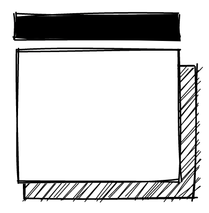
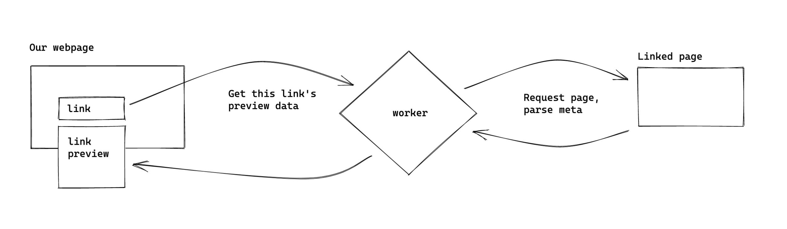

Hyperfov: Page Previews
Page previews are great!
Page previews are fantastic little piece of interactivity; they give insight into where a link leads before you click it. From poorly formed link text to sketchy URLs, there's plenty of reasons a bit more information might help before clicking into a new link. Outside of a few sites like Wikipedia, Github, and Twitter that have implemented previews for internal links, they're relatively rare.
Towards global previews
One key challenge—and why you likely don't often see previews for arbitrary links on webpages—is that fetching dynamic content from a different domain is impossible from the browser.
This approach is to deploy a small serverless function that does the work of requesting each link and sends the metadata back to the client. A script embedded in the page extracts links, sends them to the worker, then adds the preview popups when hovered.
This is some text about a variety of topics. Links to pages are scattered throughout.
This is a large blockish link.